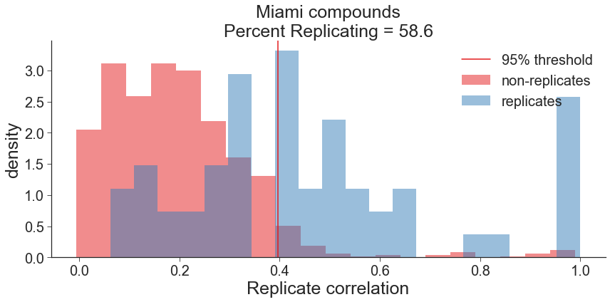
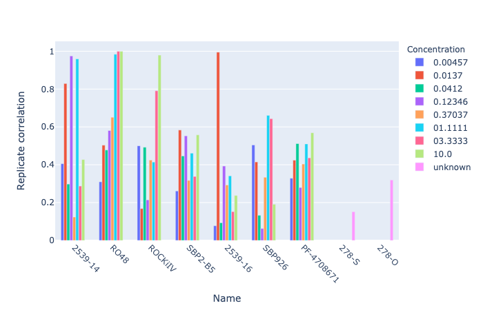
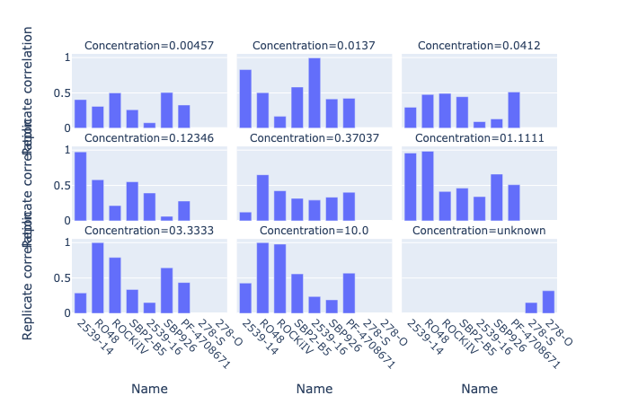
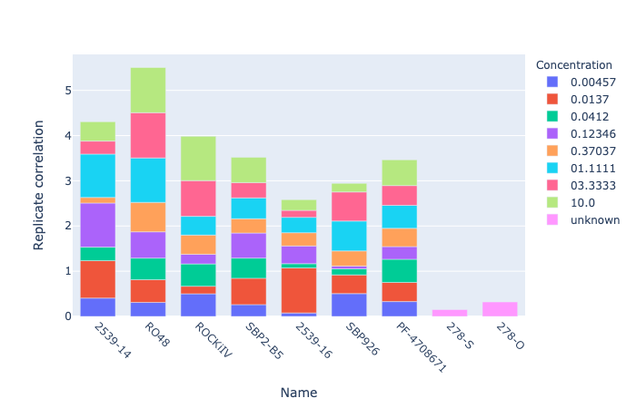

import pandas as pd
import utils
import matplotlib.pyplot as plt
import random
import plotly.express as px
from pycytominer.cyto_utils import write_gct
random.seed(9000)
plt.style.use("seaborn-ticks")
plt.rcParams["image.cmap"] = "Set1"
plt.rcParams['axes.prop_cycle'] = plt.cycler(color=plt.cm.Set1.colors)
%matplotlib inlineIn this notebook we calculate Percent Replicating to measure of the proportion of perturbations with detectable signature. The following are the steps taken
- Normalized, feature selected profiles are read and the replicate plates are merged into a single dataframe.
- Separate data frames are created for each concentration and all the following steps are repeated for each data frame
- Negative control, Positive control and empty wells are removed from the dataframe.
- The signal distribution, which is the median pairwise replicate correlation, is computed for each replicate.
- The null distribution, which is the median pairwise correlation of non-replicates, is computed for 1000 combinations of non-replicates.
- Percent Replicating is computed as the percentage of the signal distribution that is the greater than the 95th percentile of null distribution.
- The signal and noise distributions and the Percent Replicating values are plotted and the table of Percent Replicating is printed.
- A single table with replicate correlations at both concentration is printed.
- Correlation values are plotted as bar plots
batch = '2021_08_30_Batch13'
platemap = 'miami_platemap'
experiment_df = (
pd.read_csv('output/experiment-metadata.tsv', sep='\t')
.query('Batch==@batch')
.query('Plate_Map_Name==@platemap')
.reset_index(drop=True)
)
corr_replicating_df = pd.DataFrame()
all_replicating_corr_df = pd.DataFrame()
all_consensus_df = pd.DataFrame()
group_by_feature = 'Metadata_broad_sample'
n_samples = 1000
n_replicates = 5
experiment_df.head()| Batch | Plate_Map_Name | Assay_Plate_Barcode | |
|---|---|---|---|
| 0 | 2021_08_30_Batch13 | miami_platemap | BR00127153 |
| 1 | 2021_08_30_Batch13 | miami_platemap | BR00127154 |
| 2 | 2021_08_30_Batch13 | miami_platemap | BR00127152 |
| 3 | 2021_08_30_Batch13 | miami_platemap | BR00127150 |
| 4 | 2021_08_30_Batch13 | miami_platemap | BR00127151 |
all_plates_df = pd.DataFrame()
for plate in experiment_df.Assay_Plate_Barcode.unique():
df = (
utils.load_data(batch, plate, "normalized_feature_select_negcon_batch.csv.gz")
.astype({'Metadata_mmoles_per_liter':str})
.rename(columns={'Metadata_Alternate Name': 'Metadata_Name'})
)
all_plates_df = utils.concat_profiles(all_plates_df, df)
all_plates_df = utils.remove_all_control_empty_wells(all_plates_df)
all_plates_df.Metadata_mmoles_per_liter.replace('nan', 'unknown', inplace=True)
all_plates_df.Metadata_mmoles_per_liter.replace('1.1111', '01.1111', inplace=True)
all_plates_df.Metadata_mmoles_per_liter.replace('3.3333', '03.3333', inplace=True)
all_plates_df = (
all_plates_df.assign(Metadata_sample=lambda x: x.Metadata_Name+'_'+x.Metadata_mmoles_per_liter)
)
replicating_corr_df = utils.corr_between_replicates_df(all_plates_df, 'Metadata_sample')
replicating_corr = list(replicating_corr_df.replicate_correlation)
null_replicating = utils.corr_between_non_replicates(all_plates_df, n_samples=n_samples, n_replicates=n_replicates, metadata_compound_name='Metadata_broad_sample')
prop_95_replicating, value_95_replicating = utils.percent_score(null_replicating, replicating_corr, how='right')
corr_replicating_df = corr_replicating_df.append({'Description':f'Miami compounds',
'Replicating':replicating_corr,
'Null_Replicating':null_replicating,
'Percent_Replicating':'%.1f'%prop_95_replicating,
'Value_95':value_95_replicating}, ignore_index=True)
consensus_df = utils.consensus(all_plates_df, 'Metadata_sample')
replicating_corr_df[['Metadata_Name','Concentration']] = replicating_corr_df.Metadata_sample.str.split('_',expand=True)
consensus_df = consensus_df.merge(replicating_corr_df[['replicate_correlation', 'Metadata_sample']], on='Metadata_sample', how='left')print(corr_replicating_df[['Description', 'Percent_Replicating']].to_markdown(index=False))| Description | Percent_Replicating |
|:----------------|----------------------:|
| Miami compounds | 58.6 |utils.distribution_plot(df=corr_replicating_df, output_file="2.percent_replicating.png", metric="Percent Replicating")
print(replicating_corr_df.to_markdown(index=False))| Metadata_sample | replicate_correlation | Metadata_Name | Concentration |
|:-------------------|------------------------:|:----------------|:----------------|
| 2539-14_0.00457 | 0.405535 | 2539-14 | 0.00457 |
| 2539-14_0.0137 | 0.829242 | 2539-14 | 0.0137 |
| 2539-14_0.0412 | 0.297907 | 2539-14 | 0.0412 |
| 2539-14_0.12346 | 0.975244 | 2539-14 | 0.12346 |
| 2539-14_0.37037 | 0.123635 | 2539-14 | 0.37037 |
| 2539-14_01.1111 | 0.959394 | 2539-14 | 01.1111 |
| 2539-14_03.3333 | 0.287445 | 2539-14 | 03.3333 |
| 2539-14_10.0 | 0.427402 | 2539-14 | 10.0 |
| 2539-16_0.00457 | 0.0774158 | 2539-16 | 0.00457 |
| 2539-16_0.0137 | 0.995092 | 2539-16 | 0.0137 |
| 2539-16_0.0412 | 0.0932543 | 2539-16 | 0.0412 |
| 2539-16_0.12346 | 0.39311 | 2539-16 | 0.12346 |
| 2539-16_0.37037 | 0.29286 | 2539-16 | 0.37037 |
| 2539-16_01.1111 | 0.341275 | 2539-16 | 01.1111 |
| 2539-16_03.3333 | 0.152202 | 2539-16 | 03.3333 |
| 2539-16_10.0 | 0.237503 | 2539-16 | 10.0 |
| 278-O_unknown | 0.319517 | 278-O | unknown |
| 278-S_unknown | 0.15181 | 278-S | unknown |
| PF-4708671_0.00457 | 0.328545 | PF-4708671 | 0.00457 |
| PF-4708671_0.0137 | 0.424049 | PF-4708671 | 0.0137 |
| PF-4708671_0.0412 | 0.511737 | PF-4708671 | 0.0412 |
| PF-4708671_0.12346 | 0.279716 | PF-4708671 | 0.12346 |
| PF-4708671_0.37037 | 0.403821 | PF-4708671 | 0.37037 |
| PF-4708671_01.1111 | 0.510094 | PF-4708671 | 01.1111 |
| PF-4708671_03.3333 | 0.43649 | PF-4708671 | 03.3333 |
| PF-4708671_10.0 | 0.568814 | PF-4708671 | 10.0 |
| RO48_0.00457 | 0.309784 | RO48 | 0.00457 |
| RO48_0.0137 | 0.503254 | RO48 | 0.0137 |
| RO48_0.0412 | 0.477488 | RO48 | 0.0412 |
| RO48_0.12346 | 0.580963 | RO48 | 0.12346 |
| RO48_0.37037 | 0.651254 | RO48 | 0.37037 |
| RO48_01.1111 | 0.983814 | RO48 | 01.1111 |
| RO48_03.3333 | 0.999762 | RO48 | 03.3333 |
| RO48_10.0 | 0.99974 | RO48 | 10.0 |
| ROCKiIV_0.00457 | 0.500124 | ROCKiIV | 0.00457 |
| ROCKiIV_0.0137 | 0.168273 | ROCKiIV | 0.0137 |
| ROCKiIV_0.0412 | 0.492369 | ROCKiIV | 0.0412 |
| ROCKiIV_0.12346 | 0.214218 | ROCKiIV | 0.12346 |
| ROCKiIV_0.37037 | 0.424727 | ROCKiIV | 0.37037 |
| ROCKiIV_01.1111 | 0.414328 | ROCKiIV | 01.1111 |
| ROCKiIV_03.3333 | 0.790972 | ROCKiIV | 03.3333 |
| ROCKiIV_10.0 | 0.97933 | ROCKiIV | 10.0 |
| SBP2-B5_0.00457 | 0.261307 | SBP2-B5 | 0.00457 |
| SBP2-B5_0.0137 | 0.583313 | SBP2-B5 | 0.0137 |
| SBP2-B5_0.0412 | 0.446408 | SBP2-B5 | 0.0412 |
| SBP2-B5_0.12346 | 0.552923 | SBP2-B5 | 0.12346 |
| SBP2-B5_0.37037 | 0.317212 | SBP2-B5 | 0.37037 |
| SBP2-B5_01.1111 | 0.461236 | SBP2-B5 | 01.1111 |
| SBP2-B5_03.3333 | 0.338154 | SBP2-B5 | 03.3333 |
| SBP2-B5_10.0 | 0.557598 | SBP2-B5 | 10.0 |
| SBP926_0.00457 | 0.504746 | SBP926 | 0.00457 |
| SBP926_0.0137 | 0.414793 | SBP926 | 0.0137 |
| SBP926_0.0412 | 0.132735 | SBP926 | 0.0412 |
| SBP926_0.12346 | 0.0629837 | SBP926 | 0.12346 |
| SBP926_0.37037 | 0.333801 | SBP926 | 0.37037 |
| SBP926_01.1111 | 0.660686 | SBP926 | 01.1111 |
| SBP926_03.3333 | 0.643428 | SBP926 | 03.3333 |
| SBP926_10.0 | 0.191084 | SBP926 | 10.0 |print(corr_replicating_df[['Description', 'Value_95']].to_markdown(index=False))| Description | Value_95 |
|:----------------|-----------:|
| Miami compounds | 0.396857 |print(replicating_corr_df[['Metadata_Name','Concentration','replicate_correlation']].to_markdown(index=False))| Metadata_Name | Concentration | replicate_correlation |
|:----------------|:----------------|------------------------:|
| 2539-14 | 0.00457 | 0.405535 |
| 2539-14 | 0.0137 | 0.829242 |
| 2539-14 | 0.0412 | 0.297907 |
| 2539-14 | 0.12346 | 0.975244 |
| 2539-14 | 0.37037 | 0.123635 |
| 2539-14 | 01.1111 | 0.959394 |
| 2539-14 | 03.3333 | 0.287445 |
| 2539-14 | 10.0 | 0.427402 |
| 2539-16 | 0.00457 | 0.0774158 |
| 2539-16 | 0.0137 | 0.995092 |
| 2539-16 | 0.0412 | 0.0932543 |
| 2539-16 | 0.12346 | 0.39311 |
| 2539-16 | 0.37037 | 0.29286 |
| 2539-16 | 01.1111 | 0.341275 |
| 2539-16 | 03.3333 | 0.152202 |
| 2539-16 | 10.0 | 0.237503 |
| 278-O | unknown | 0.319517 |
| 278-S | unknown | 0.15181 |
| PF-4708671 | 0.00457 | 0.328545 |
| PF-4708671 | 0.0137 | 0.424049 |
| PF-4708671 | 0.0412 | 0.511737 |
| PF-4708671 | 0.12346 | 0.279716 |
| PF-4708671 | 0.37037 | 0.403821 |
| PF-4708671 | 01.1111 | 0.510094 |
| PF-4708671 | 03.3333 | 0.43649 |
| PF-4708671 | 10.0 | 0.568814 |
| RO48 | 0.00457 | 0.309784 |
| RO48 | 0.0137 | 0.503254 |
| RO48 | 0.0412 | 0.477488 |
| RO48 | 0.12346 | 0.580963 |
| RO48 | 0.37037 | 0.651254 |
| RO48 | 01.1111 | 0.983814 |
| RO48 | 03.3333 | 0.999762 |
| RO48 | 10.0 | 0.99974 |
| ROCKiIV | 0.00457 | 0.500124 |
| ROCKiIV | 0.0137 | 0.168273 |
| ROCKiIV | 0.0412 | 0.492369 |
| ROCKiIV | 0.12346 | 0.214218 |
| ROCKiIV | 0.37037 | 0.424727 |
| ROCKiIV | 01.1111 | 0.414328 |
| ROCKiIV | 03.3333 | 0.790972 |
| ROCKiIV | 10.0 | 0.97933 |
| SBP2-B5 | 0.00457 | 0.261307 |
| SBP2-B5 | 0.0137 | 0.583313 |
| SBP2-B5 | 0.0412 | 0.446408 |
| SBP2-B5 | 0.12346 | 0.552923 |
| SBP2-B5 | 0.37037 | 0.317212 |
| SBP2-B5 | 01.1111 | 0.461236 |
| SBP2-B5 | 03.3333 | 0.338154 |
| SBP2-B5 | 10.0 | 0.557598 |
| SBP926 | 0.00457 | 0.504746 |
| SBP926 | 0.0137 | 0.414793 |
| SBP926 | 0.0412 | 0.132735 |
| SBP926 | 0.12346 | 0.0629837 |
| SBP926 | 0.37037 | 0.333801 |
| SBP926 | 01.1111 | 0.660686 |
| SBP926 | 03.3333 | 0.643428 |
| SBP926 | 10.0 | 0.191084 |fig = px.bar(data_frame=replicating_corr_df.sort_values(by=['Concentration']),
x='Metadata_Name',
y='replicate_correlation',
color='Concentration',
barmode='group')
fig.update_xaxes(tickangle=45)
fig.update_layout(bargap=0.3,bargroupgap=0.0,
xaxis1=dict(title='Name'),
xaxis2=dict(title='Name'),
yaxis1=dict(title='Replicate correlation'),
yaxis3=dict(title='Replicate correlation'))
fig.show("png")
fig.write_image('figures/2.replicate_correlation_concentration.png', width=1000, height=750, scale=2)
fig = px.bar(data_frame=replicating_corr_df.sort_values(by=['Concentration']),
x='Metadata_Name',
y='replicate_correlation',
facet_col='Concentration',
facet_col_wrap=3)
fig.update_xaxes(tickangle=45)
fig.update_layout(bargap=0.3,bargroupgap=0.0,
xaxis1=dict(title='Name'),
xaxis2=dict(title='Name'),
xaxis3=dict(title='Name'),
yaxis1=dict(title='Replicate correlation'),
yaxis4=dict(title='Replicate correlation'),
yaxis7=dict(title='Replicate correlation'))
fig.show("png")
fig.write_image('figures/2.replicate_correlation_concentration_separate.png', width=1000, height=750, scale=2)
fig = px.bar(data_frame=replicating_corr_df.sort_values(by=['Concentration']),
x='Metadata_Name',
y='replicate_correlation',
color='Concentration')
fig.update_xaxes(tickangle=45)
fig.update_layout(bargap=0.3,bargroupgap=0.0,
xaxis1=dict(title='Name'),
xaxis2=dict(title='Name'),
yaxis1=dict(title='Replicate correlation'),
yaxis3=dict(title='Replicate correlation'))
fig.show("png")
fig.write_image('figures/2.replicate_correlation_concentration_stacked.png', width=1000, height=750, scale=2)